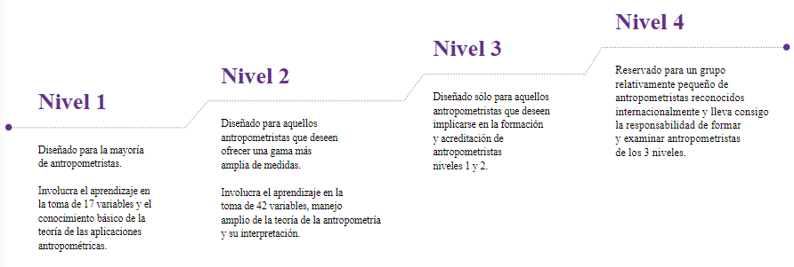
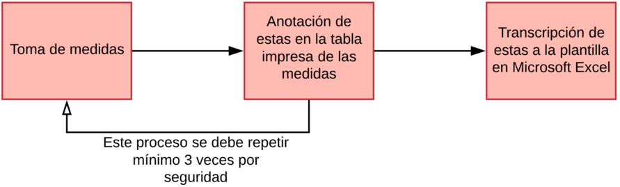
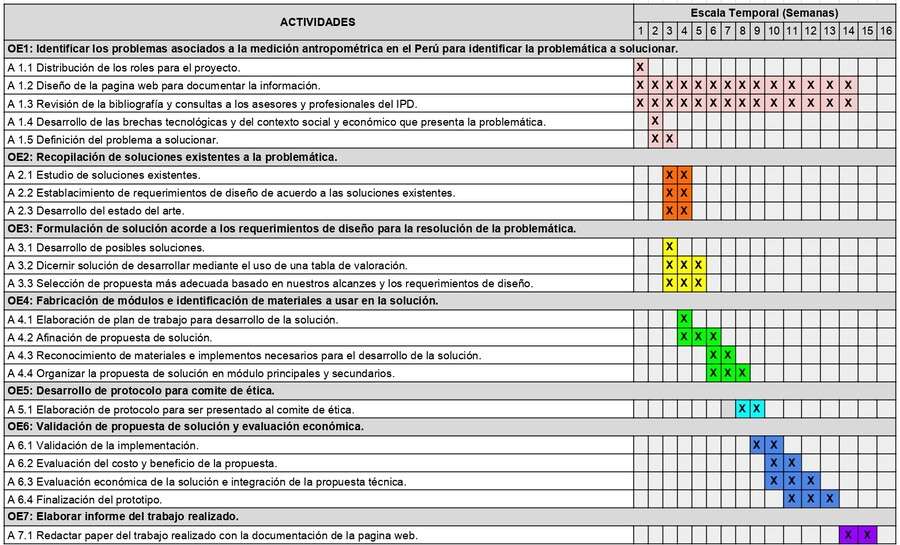

INTRODUCCIÓN
En el Perú, se invierte un aproximado de 15 millones de soles en deporte, el cual resulta insuficiente para cubrir los gastos de preparación que las 61 federaciones deportivas necesitan para representar al país en competencias internacionales como los Panamericanos. Por otro lado, es la realidad en países vecinos como Ecuador, Chile, Colombia y Brasil cuyas partidas presupuestarias no bajan de los 50 millones de dólares. Sin embargo, entre los años 2009 y 2018 la inversión en infraestructura deportiva ha aumentado 5% anual. Por ello es necesario el aprovechamiento y adecuado uso de la nueva infraestructura desarrollada como equipos sofisticados para evaluar y mejorar el rendimiento de los deportistas de alto rendimiento.
Una ciencia importante en la mejora física de los deportistas es la antropometría, la cual estudia las medidas del cuerpo humano sin ningún tipo de porcentaje de error mínimo, ya que las medidas han de ser exactas a la par que se tomen. Sin embargo, los recursos con los que cuenta el IPD son muy escasos, ya que su sistema de recolección de medidas es convencional y no muy eficiente, además de que es necesario contar con un especialista calificado para la toma de estas medidas, a diferencia de los métodos utilizados por países vecinos como Brasil y Colombia, donde la antropometría se realiza con equipos muy sofisticados.
PROBLEMA
“Tiempo excesivo y dependencia de especialistas ISAK nivel 3 en la toma de mediciones antropométricas de atletas de alta competencia en el IPD.”
EFECTOS QUE CAUSAN EL PROBLEMA
Exactitud en toma de mediciones
El nutricionista Victor Aguero es el único con certificación ISAK Nivel 3 del Perú, esto trae como consecuencia la dependencia de él para la toma de medidas en atletas de alta competencia debido a la importancia que estos tienen. En consecuencia, no siempre se puede contar con él para la toma de estas mediciones, lo que aumenta el riesgo de fallo en la toma de medidas.

Figura. Niveles de certificación internacional en Kinantropometría
Tecnología usada para las mediciones
Según el nutricionista Victor Agüero, la tecnología que se está usando actualmente para registrar las mediciones mientras estas se llevan a cabo es lápiz y papel, este proceso es lento y tedioso, en especial si es solo una persona la que realiza ambas labores (Tomar medidas y anotarlas). Además, posterior a su anotación en el papel, estas mediciones deben ser transcritas a una plantilla en Microsoft Excel, la cual ha sido creada por el mismo Víctor Agüero, es decir, no está estandarizada, esta simplemente la realizó para simplificar el trabajo. En conclusión, el proceso de puede definir de la siguiente manera:

Figura . Proceso de toma de medidas antropométricas en el Instituto Peruano de Deporte
Existen tecnologías que pueden acelerar este proceso, pero según el nutricionista, el principal problema es que no hay proveedores de software y maquinarias para sus necesidades.
Son estos 2 principales problemas lo causantes del excesivo tiempo en la toma de mediciones antropométricas.
PLAN DE TRABAJO
